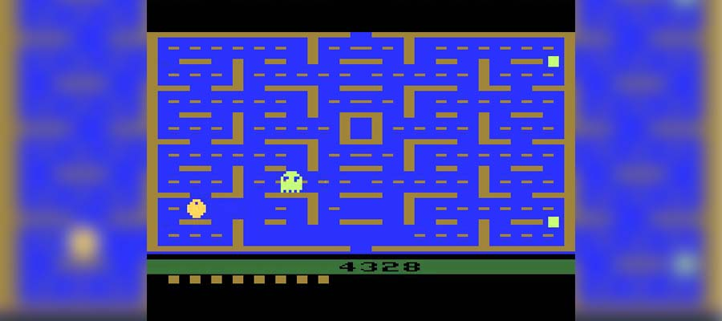

Pac-Man

Pac-Man (conhecido em japonês com o nome de Puckman ou パックマン) é um jogo eletrônico criado por Tōru Iwatani para a empresa Namco, e sendo distribuído para o mercado americano pela Midway Games. Produzido originalmente para Arcade no início dos anos 1980, tornou-se um dos jogos mais jogados e populares no momento, tendo versões modernas para diversos consoles e continuações para tantos outros, inclusive na atualidade. A mecânica do jogo é simples: o jogador era uma cabeça redonda com uma boca que se abre e fecha, posicionado em um labirinto simples repleto de pastilhas e 4 fantasmas que o perseguiam. O objetivo era comer todas as pastilhas sem ser alcançado pelos fantasmas, em ritmo progressivo de dificuldade.
Pac-Man é o personagem principal da franquia de jogos eletrônicos. É marcado como um dos personagens mais icônicos dos games desde sua estreia, recebendo inúmeros jogos inspirados no mesmo e programas de TV. O personagem também serve como mascote oficial da empresa Namco.Os fantasmas Blinky, Pinky, Inky e Clyde são os inimigos/vilões do jogo. Apesar da natureza aparentemente aleatória, seus movimentos são estritamente determinísticos, que os players usaram para sua vantagem. Em uma entrevista, o criador Toru Iwatani afirmou que ele havia projetado cada inimigo com sua própria personalidade distinta, a fim de impedir que o jogo se tornasse impossivelmente difícil ou chato de jogar. Mais recentemente, Iwatani descreveu o comportamento do inimigo com mais detalhes na 2011 Game Developers Conference. Ele afirmou que o inimigo vermelho persegue Pac-Man, e os inimigos rosa e azul tentam se posicionar na frente da boca de Pac-Man. Embora ele tenha afirmado que o comportamento do inimigo laranja é aleatório, o código do jogo revela que ele realmente persegue o Pac-Man na maioria das vezes, mas também se move para o canto inferior esquerdo do labirinto quando fica muito perto do Pac-Man.